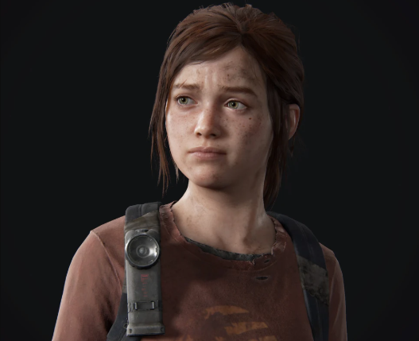
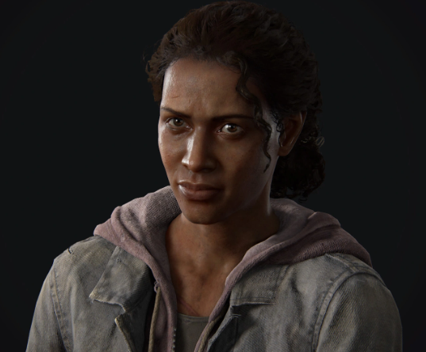
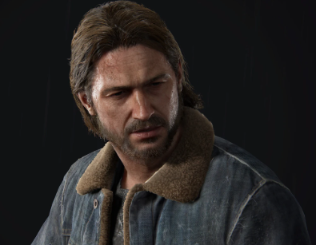
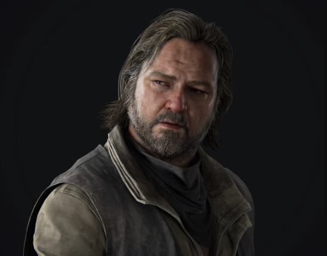
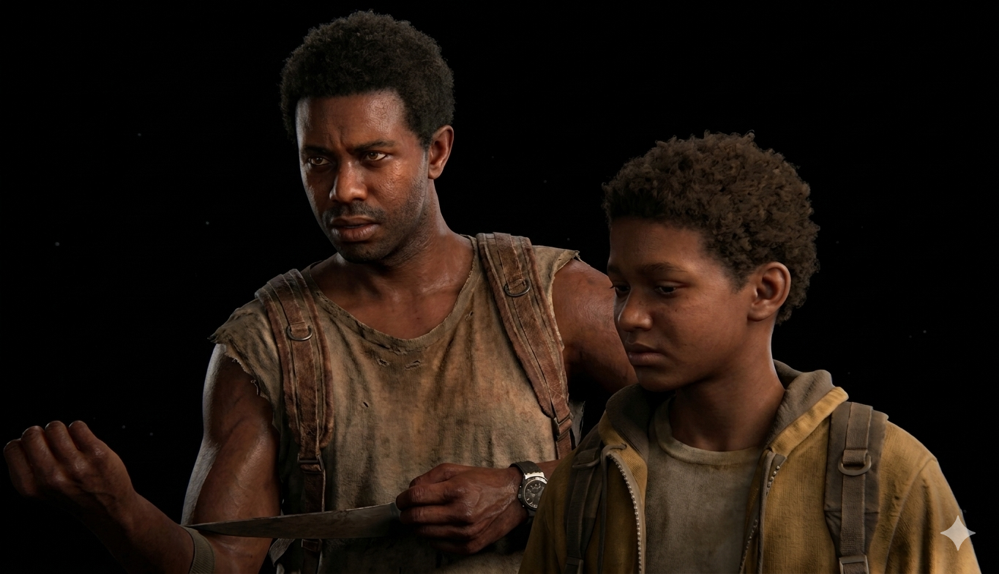
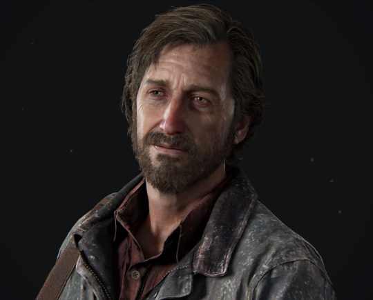

Protagonista
Protagonista
Joel Miller
Joel é um contrabandista que vive na zona de quarentena de Boston. Sua jornada com Ellie o força a confrontar seu passado traumático e redescobrir sua humanidade.
Conheça os sobreviventes que marcaram a jornada de Joel e Ellie.
Protagonista
Joel é um contrabandista que vive na zona de quarentena de Boston. Sua jornada com Ellie o força a confrontar seu passado traumático e redescobrir sua humanidade.

ProtagonistaUma garota de 14 anos que nasceu após o surto e nunca conheceu o mundo antigo. Ellie é imune ao fungo Cordyceps, tornando-a potencialmente a chave para uma cura.
 Aliada
Aliada
Parceira de contrabando de Joel em Boston, Tess é durona e uma sobrevivente experiente. Ela desempenha um papel crucial no início da jornada de Joel e Ellie, sacrificando-se para que eles possam escapar.

VagalumeLíder dos Vagalumes e amiga da mãe de Ellie. Marlene acredita que sacrificar Ellie para criar uma vacina é o único caminho para salvar a humanidade.

FamíliaIrmão mais novo de Joel e ex-membro dos Vagalumes. Tommy agora vive em uma comunidade em Jackson com sua esposa Maria.

AliadoUm sobrevivente que vive sozinho, Bill deve favores a Joel e os ajuda a conseguir um veículo. Apesar de ser agressivo, ele mostra lealdade aqueles em quem confia.

AliadosDois irmãos que Joel e Ellie encontram em Pittsburgh. Henry é protetor de seu irmão mais novo Sam, que é surdo. A história deles ilustra os sacrifícios para proteger aqueles que amam.

AntagonistaLíder de um grupo de sobreviventes que Ellie encontra durante o inverno. Inicialmente parecendo amigável, David revela sua verdadeira natureza.